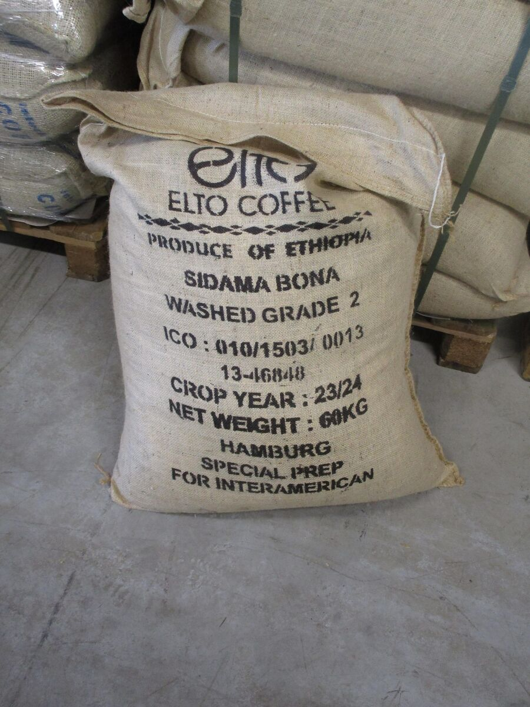

Three washed Sidamas on one table
We needed one Ethiopian coffee for the autumn. We had samples of three, all washed and all from Sidama, and they could hardly have tasted more different.


Every July our importer sends samples from the new Ethiopian harvest. This year we narrowed them down to three washed lots, all from Sidama, the region south of Hawassa where most of the Ethiopian coffee we've sold has come from. We cupped them on Thursday 6 August, the same way we cup everything.
How we cup
Cupping is how the coffee trade tastes coffee, and it's less fancy than it looks. You grind 8.25 g of a coffee into a small bowl, pour in 150 g of water just off the boil and leave it for four minutes. Then you break the crust of grounds on top with a spoon, smell what comes up, and skim off what's left floating. After a few more minutes you slurp the coffee off a spoon, again and again, as it cools.
We make three bowls of each coffee so that one odd bean can't decide the result, and we taste every bowl at least three times on its way from hot to room temperature. Dev and I score separately and don't say a word until we've both written our scores down. We use the standard 100-point form. Anything over 80 counts as specialty coffee, and anything over 86 is a coffee we can rarely afford.
The three coffees
| Lot | Altitude | Ruth | Dev | Cost per kg |
|---|---|---|---|---|
| Bensa, Shantawene | 2,250 m | 87 | 86.5 | £10.80 |
| Bona Zuria | 1,950 m | 86 | 86.25 | £8.60 |
| Arbegona | 2,100 m | 84.5 | 85 | £8.90 |
The cost is our estimate of what each coffee would cost us landed in Sheffield, before roasting.
Bensa, Shantawene
This was the most exciting coffee we've cupped this year. Jasmine as soon as the crust broke, then peach and bergamot, like a good Earl Grey with fruit in it. It was still changing in the cup forty minutes later. Both of us scored it highest.
Bona Zuria
Quieter. Lemon, black tea and honey, with a long sweet finish. It wasn't as showy as the Bensa, but it was the most consistent of the three. All three bowls tasted the same, hot or cold.
Arbegona
Two of the three bowls were lovely, with stone fruit and brown sugar. The third had a woody, papery note that both of us picked up without saying anything. If one bowl in three shows a fault in a 300-gram sample, it will show up in a fair number of bags from a 60-kilo sack. We've learned not to talk ourselves out of that.
One bad bowl out of three is enough to stop us. If it shows up in the sample, it will show up in somebody's bag.
What we bought
We bought six bags of the Bona Zuria. I went back and forth over the Bensa for a whole weekend, and in the end the sums decided it. At £10.80 a kilo, a 250-gram bag would have had to sell for about £14. We have a few customers who would buy that once. Most of the people who buy our single origins buy them every fortnight, and the Bona at £11 a bag is a coffee they can keep buying through the winter.
The Bona also works as espresso, which the Bensa didn't, so the cafés we supply can use it as a guest coffee. That alone makes six bags last.

The new crop ships from Djibouti in September and should reach us in late October. Washed Ethiopian coffees keep well as green beans, so we'll be roasting it until about March. We'll put it on the shop as soon as the first batch has rested, and newsletter readers will hear first. The Bensa went to a roaster in Glasgow, and I hope they charge what it's worth.